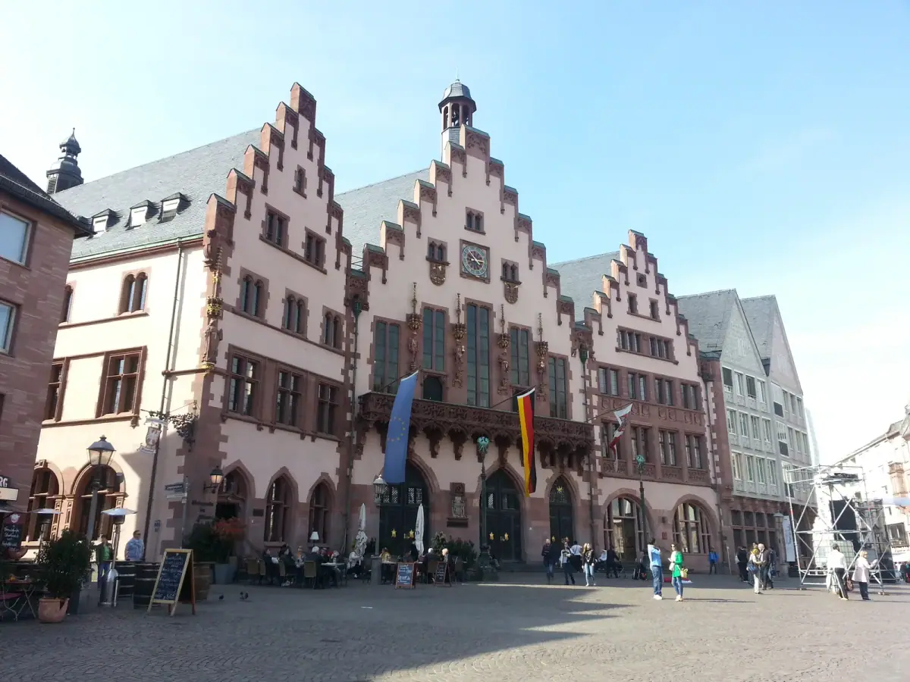
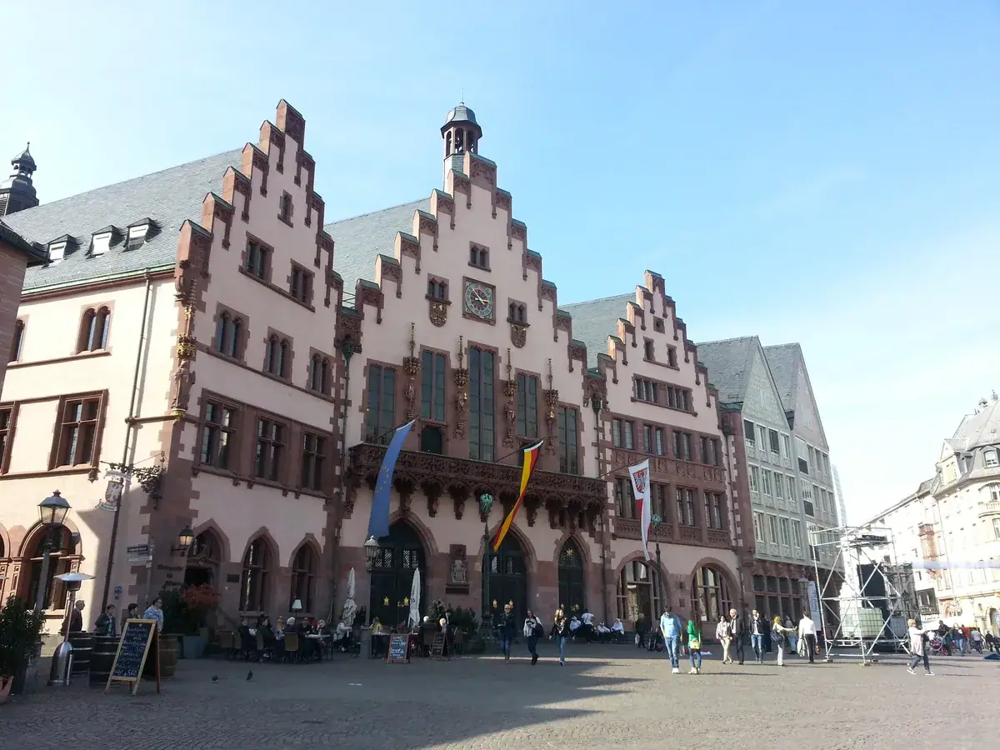
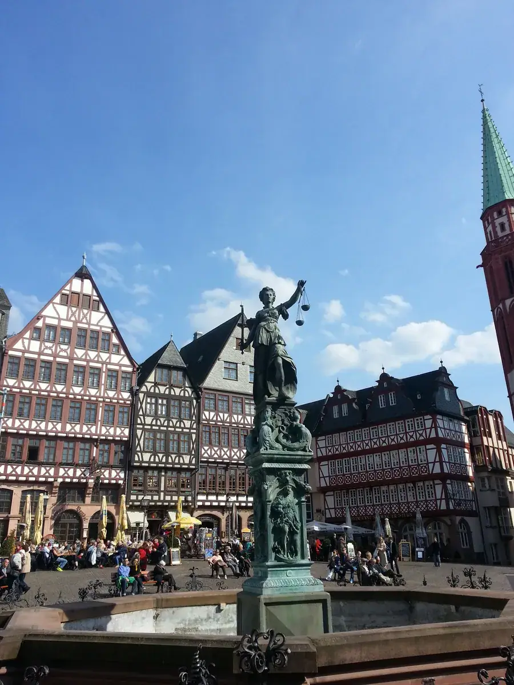
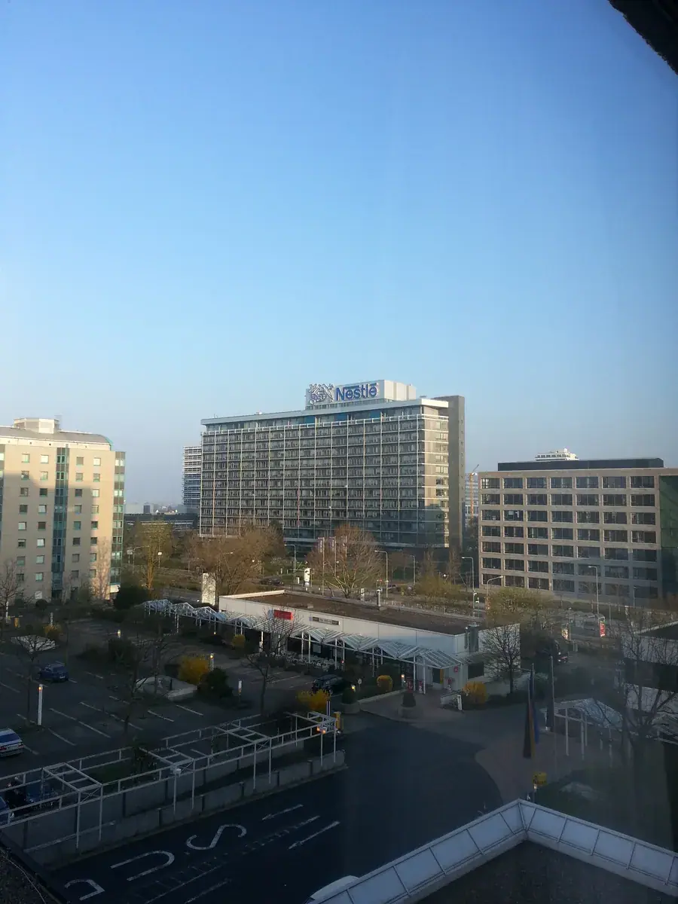
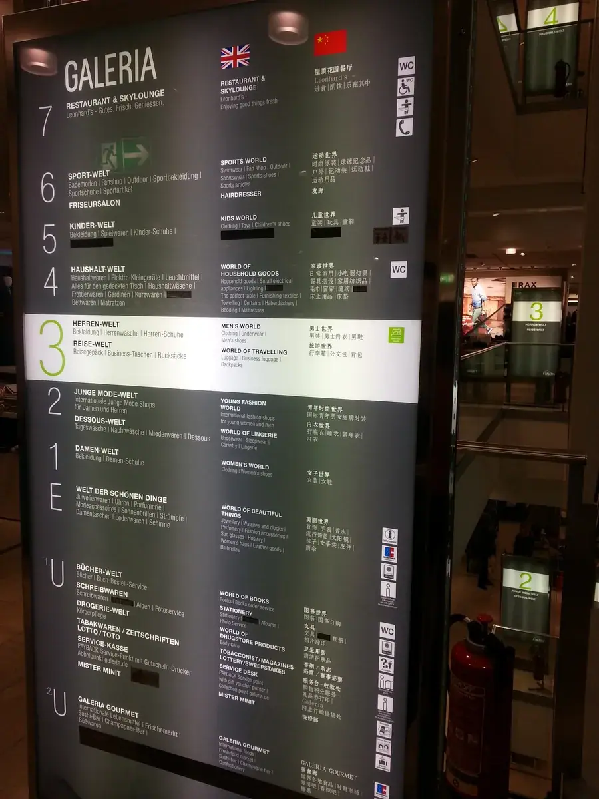

法兰克福：一半是欧洲央行，一半是华人生意场，中间还夹着两家我去调研的零售巨头
Frankfurt — half European Central Bank, half Chinese business arena, with two retailers I studied in between.

（2016 年 · 德国 · 法兰克福 · Hornbach / Höffner 门店调研）
先说这座城市


法兰克福在德国城市里是个异类。这座城市是欧洲央行（ECB）总部所在地，也是德国最大证券交易所——法兰克福证交所的所在地，金融业的密度让它的天际线长成了德国最不「德国」的样子：摩天大楼林立，当地人自己戏称这里是「美因哈顿」（Mainhattan，把美因河 Main 和曼哈顿 Manhattan 拼在一起）。这在德国其他城市几乎看不到，大多数德国城市出于历史保护和城市规划的考虑，是刻意压低天际线的。
但法兰克福的老城底子一点不新——历史上这里长期是神圣罗马帝国选举、加冕皇帝的地方，老城中心的罗马广场（Römerberg）一带，战后按老样子重建出了中世纪风貌的建筑群。所以走在法兰克福，常常是一步从玻璃幕墙的金融区跨进几百年前皇权历史的老城，这种反差在德国其他城市不太常见。
你提到那边华人很多，这是有结构性原因的。法兰克福机场是欧洲客流量最大的航空枢纽之一，中德之间大量的商贸、留学、探亲往来都经停或落地在这里；法兰克福同时是金融和会展中心，聚集了大量中资银行、贸易公司在德国乃至欧洲的代表处，自然带来了长期驻留的华人商务群体；再加上留学生和老一代华人移民经营的餐饮批发生意，慢慢在当地沉淀出了有相当规模的华人社区。放在你们这个 GTN 项目的语境里看，法兰克福大概率是国内企业出海欧洲时，遇到华人商业网络密度最高的一座德国城市。
再说这两家零售巨头
你说的「H 开头的商场」，大概率是这两家里的一家或者都去了——正好是德国零售业里两个完全不同赛道的头部选手，放在一起看反而更有意思。
Hornbach 是德国最大的建材家居连锁之一，1877 年创立，总部在巴伐利亚州边境附近的 Bornheim，主打的是大型仓储式建材超市——一站式覆盖建筑材料、五金工具、园艺产品，门店动辄上万平方米，是典型的「仓储式陈列、专业客群和 DIY 消费者混合服务」的模式。到 2021 财年，Hornbach 集团年营收超过 51 亿欧元，在欧洲 9 个国家开出 170 家左右的门店。如果你当时是在门窗五金这个行业里做渠道调研，Hornbach 几乎是绕不开的一站——它是德国门窗五金产品最重要的终端零售渠道之一，诺托这样的五金厂商生产出来的产品，很大一部分最终就是通过 Hornbach 这类建材连锁摆上货架、卖到终端消费者和专业装修承包商手里的。也就是说，如果你去 Hornbach 调研的是「渠道端」，那和你在诺托看到的「生产端」刚好是同一条产业链的两头。
Höffner 则完全是另一个赛道——德国最大的家具零售商之一，前身可追溯到 1874 年在柏林创立的同名家具企业，二战后一度中断，1967 年由企业家 Kurt Krieger 买下「Höffner」这个名字重新做起，总部后来落在勃兰登堡的舍讷费尔德。今天的 Höffner 是德语区规模最大的独立家具连锁之一，单店展厅面积能做到数万平方米，产品线覆盖卧室、客厅、餐厅、办公家具等全品类。放在欧洲家具零售格局里看，Höffner 长期和宜家一起被列为德国家具零售的头部玩家。如果这次调研的是 Höffner，那更多是从「终端消费场景」的角度去看德国家庭对家居产品的消费习惯和渠道结构，这和门窗五金行业关联相对间接一些，但对理解德国零售业的组织方式、门店运营逻辑同样有参考价值。


出海考察最容易扎堆去看总部、工厂、展会，却很少有人愿意站到货架前面，看东西最后是怎么卖出去的——渠道端的信息，往往比技术参数更难拿到，也更容易被低估。
——董立鑫 海鑫汇创始人兼执行总裁，新加坡世贸秘书长兼首席运营官
本文整理自董立鑫（Bruce Dong）海外产业考察记录，首发于海鑫汇。